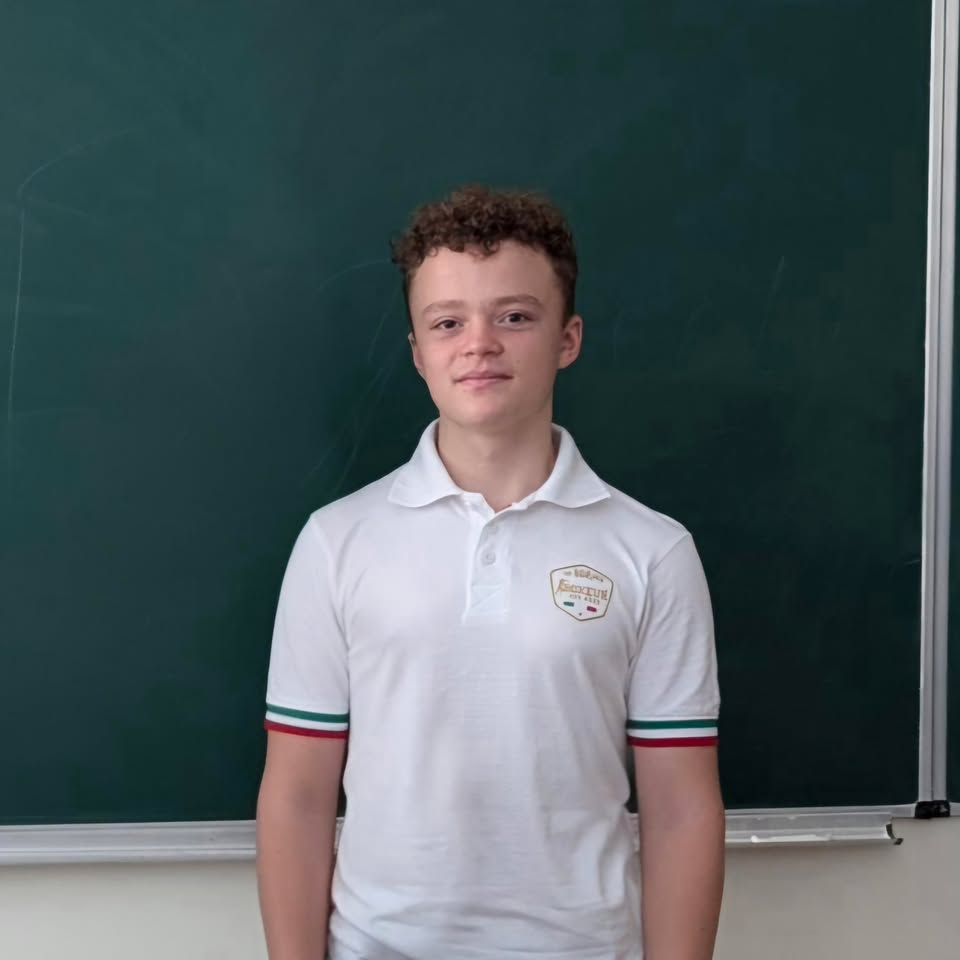
Achirus Constantin
Constantin este un coleg calm, care asculta cu atentie ideile celorlalti. Ii place sa gaseasca solutii simple la probleme complicate. In echipa, aduce rabdare si o vorba buna.

Constantin este un coleg calm, care asculta cu atentie ideile celorlalti. Ii place sa gaseasca solutii simple la probleme complicate. In echipa, aduce rabdare si o vorba buna.
Nicolae abordeaza fiecare provocare cu multa curiozitate. Ii place sa descopere cum functioneaza lucrurile din jurul sau. Este mereu gata sa incerce o idee noua alaturi de colegi.
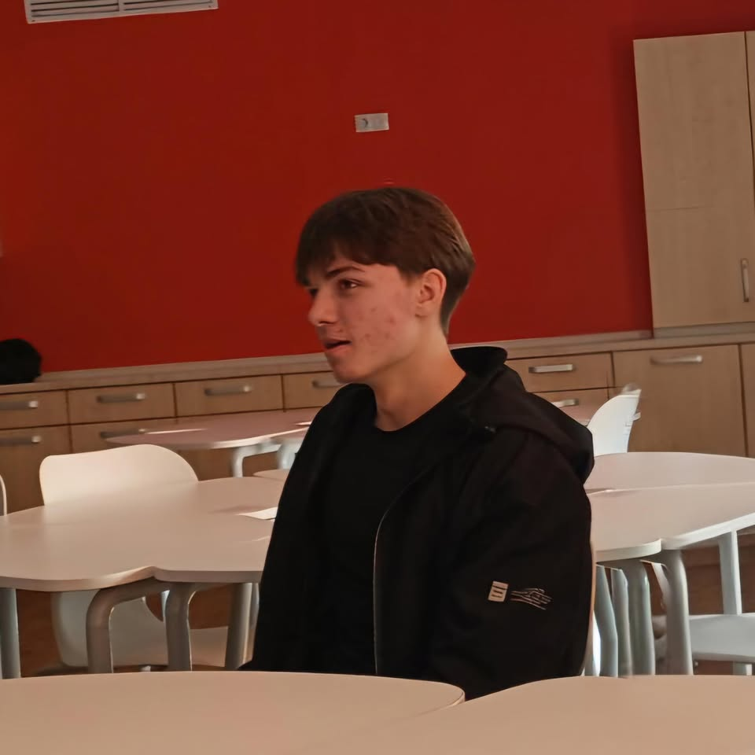
Dan aduce energie si voie buna in conversatiile grupei. Ii plac activitatile in care poate lucra impreuna cu ceilalti. Gaseste adesea o gluma potrivita pentru o pauza mai vesela.
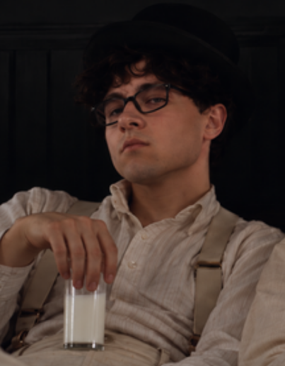
Eduard este atras de tehnologie si de proiectele creative. Ii place sa transforme o idee intr-un lucru pe care il poate arata celorlalti. Pune suflet in detalii si cauta mereu ceva de imbunatatit.
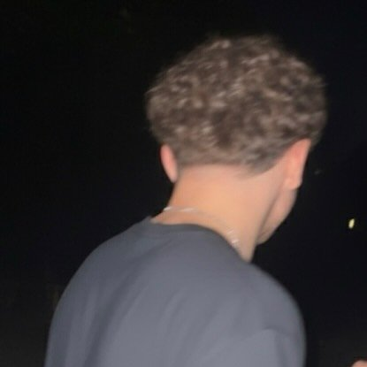
Pavel prefera sa ia lucrurile pe rand si sa le duca pana la capat. Ii place sa inteleaga bine o problema inainte de a o rezolva. Colegii pot gasi in el un partener atent la munca de echipa.
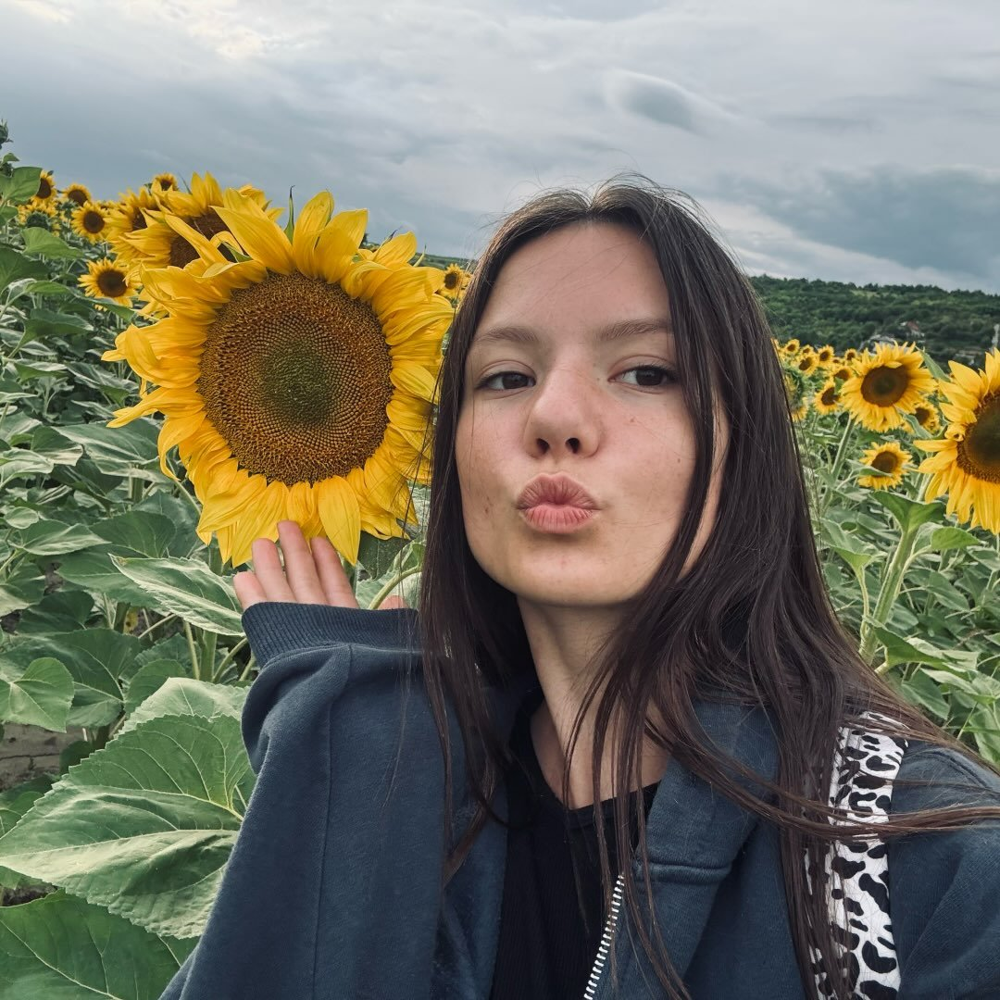
Adriana priveste fiecare proiect ca pe o ocazie de a crea ceva frumos. Ii place sa imbine ideile practice cu mici detalii originale. In discutiile de grup, vine cu propuneri si asculta parerile celorlalti.
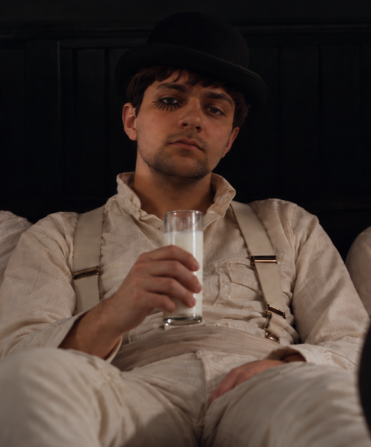
Ion este un coleg deschis, care intra usor in vorba cu ceilalti. Ii plac provocarile care cer putina logica si putina imaginatie. Lucreaza cu placere atunci cand echipa are un scop comun.
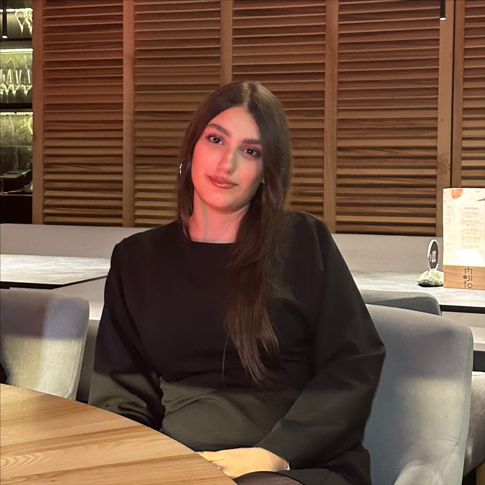
Patricia gaseste inspiratie in culori, imagini si idei neobisnuite. Ii place sa aduca o nota personala lucrurilor pe care le face. Participa cu entuziasm la proiectele in care fiecare poate contribui.
Alexandru este curios si pune intrebari cand vrea sa inteleaga ceva. Ii place sa testeze mai multe variante inainte de a alege o solutie. In echipa, isi imparte ideile si invata din experienta celorlalti.
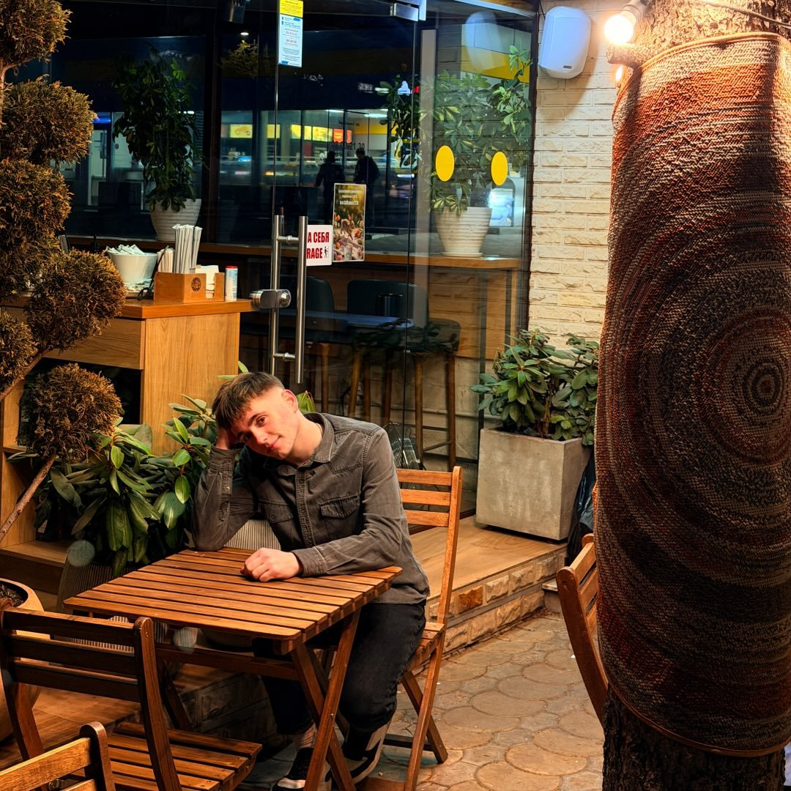
Sergiu abordeaza sarcinile cu rabdare si simt practic. Ii place sa vada rezultate concrete dupa o zi de lucru. Este bucuros sa dea o mana de ajutor cand un coleg are nevoie.
Gheorghe aduce o atitudine relaxata in activitatile grupei. Ii place sa discute idei si sa descopere perspective diferite. Se implica in proiecte cu dorinta de a face ceva util impreuna.
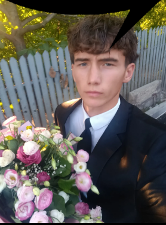
Vladislav este interesat de solutii ingenioase si de idei practice. Ii place sa desfaca o problema in pasi mai mici. Are rabdare sa incerce din nou atunci cand prima varianta nu reuseste.
Marin apreciaza lucrurile facute cu grija si fara graba. Ii place sa lucreze intr-o atmosfera prietenoasa. In activitatile comune, contribuie cu idei clare si incurajari pentru colegi.
Salomeia aduce imaginatie in proiectele la care participa. Ii place sa caute detaliul care face o prezentare mai interesanta. Asculta sugestiile colegilor si le combina cu propriile idei.
Oxana este atenta la felul in care sunt organizate lucrurile. Ii place sa pregateasca un plan inainte de a incepe o sarcina. Intr-o echipa, ajuta ideile sa prinda o forma clara.
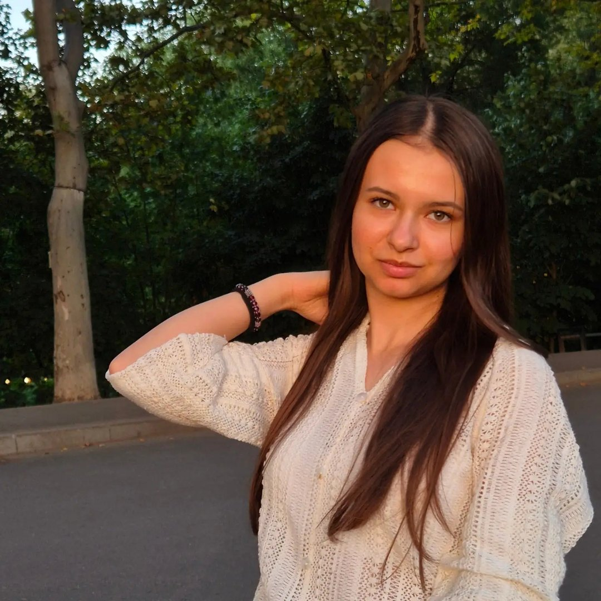
Virinea priveste cu entuziasm activitatile care cer creativitate. Ii place sa descopere lucruri noi si sa le povesteasca celorlalti. Aduce in grup o atitudine deschisa si dorinta de a colabora.
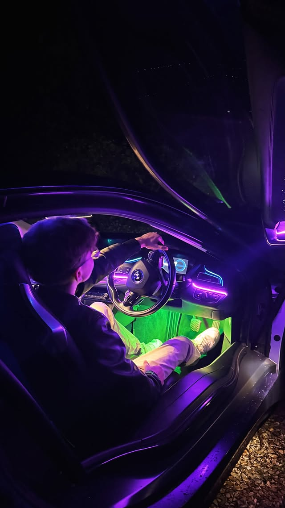
Constantin este un coleg care apreciaza explicatiile clare. Ii place sa invete prin exemple si exercitii practice. Cand lucreaza cu ceilalti, urmareste ca fiecare sa inteleaga ce are de facut.
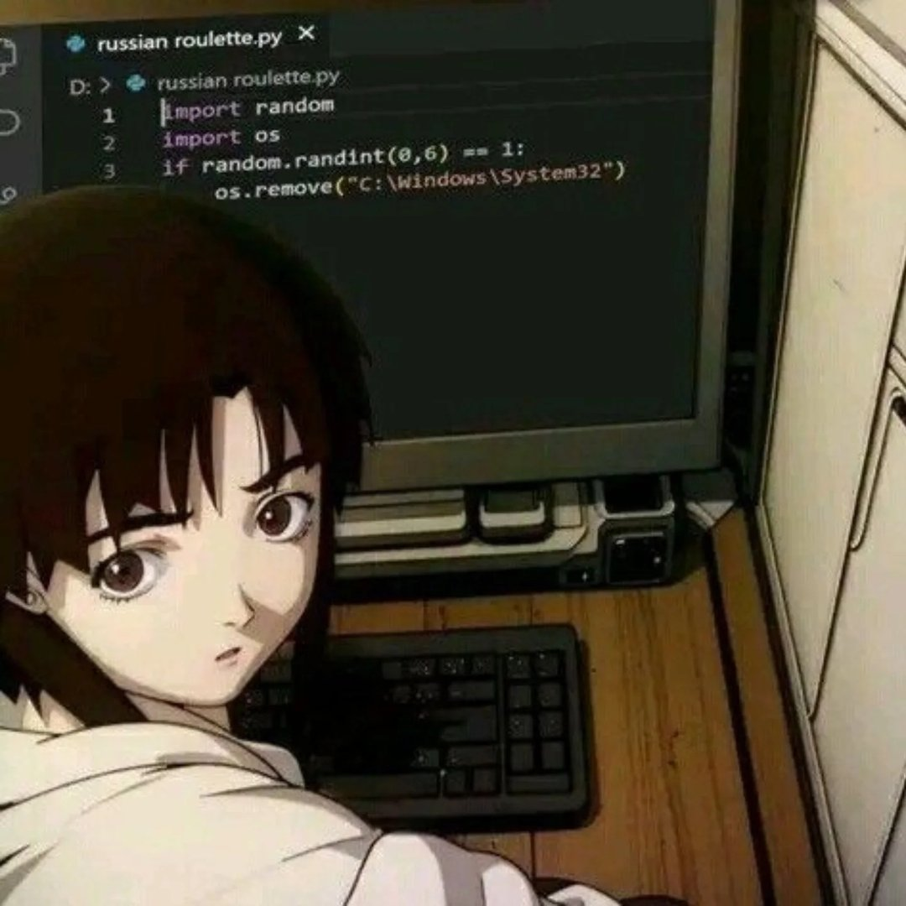
Nicolae abordeaza proiectele cu interes si rabdare. Ii place sa experimenteze si sa observe ce poate imbunatati. Se bucura atunci cand o idee discutata in grup devine un rezultat concret.
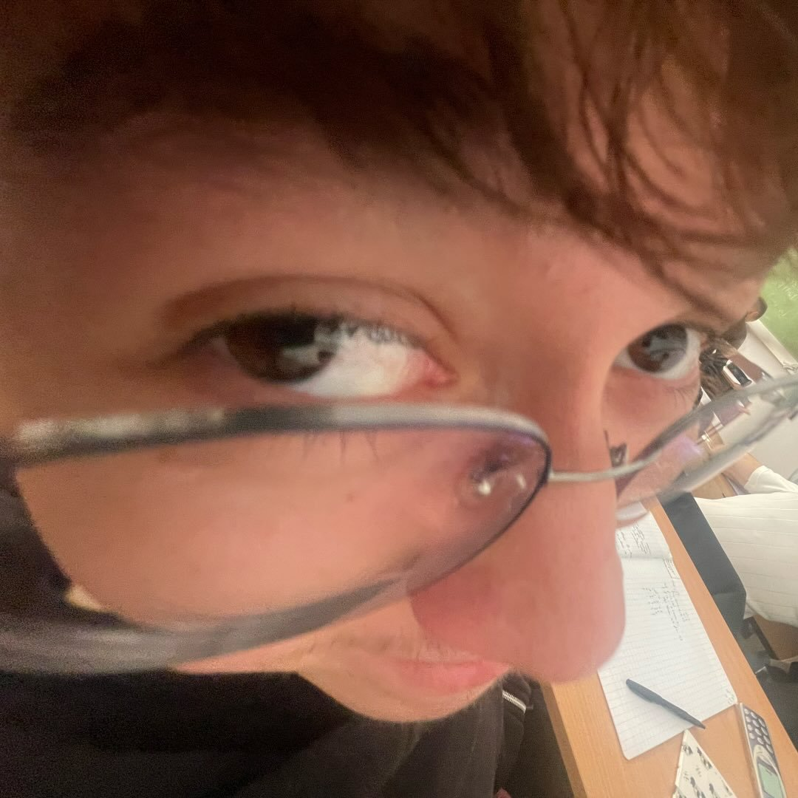
Vladislav este atras de provocarile care cer atentie la detalii. Ii place sa compare solutii si sa o gaseasca pe cea potrivita. In munca de echipa, contribuie cu observatii si propuneri practice.
Dragos aduce energie in activitatile comune. Ii place sa isi puna ideile in practica si sa invete din incercari. Gaseste usor un subiect de discutie in pauzele dintre ore.
Ecaterina are o abordare atenta si creativa a proiectelor. Ii place sa imbine informatiile bine organizate cu un aspect placut. In echipa, tine cont de ideile fiecaruia si cauta un rezultat comun.
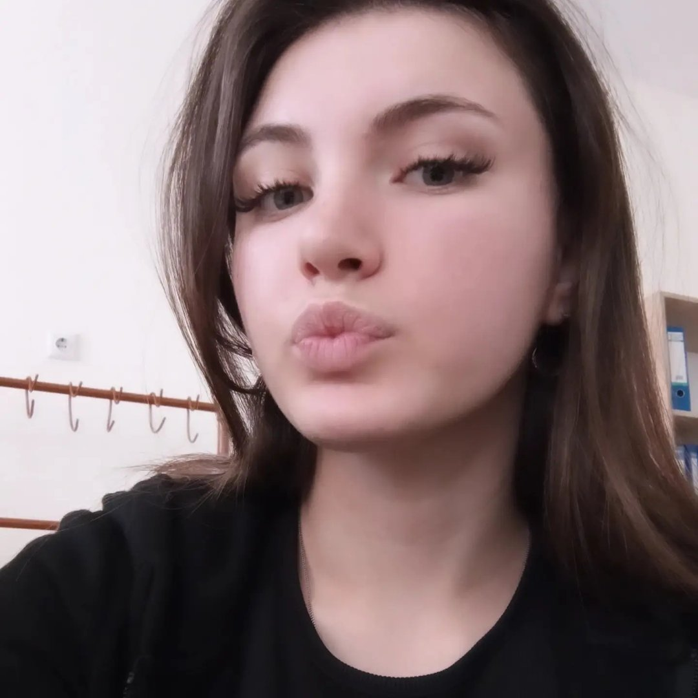
Alexandrina gaseste bucurie in activitatile care lasa loc imaginatiei. Ii place sa lucreze la detalii si sa incerce combinatii noi. Este deschisa la colaborare si la sugestiile venite din partea colegilor.
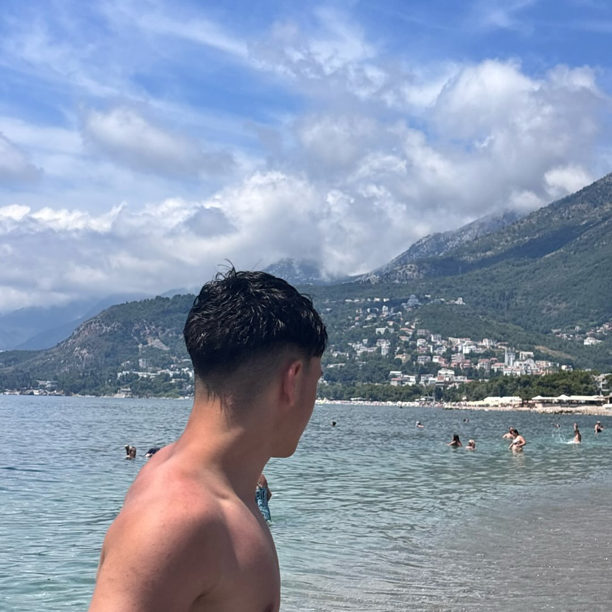
Maxim prefera provocarile din care poate invata ceva nou. Ii place sa testeze idei si sa vada cum functioneaza in practica. Participa la discutii cu intrebari si cu dorinta de a gasi o solutie.
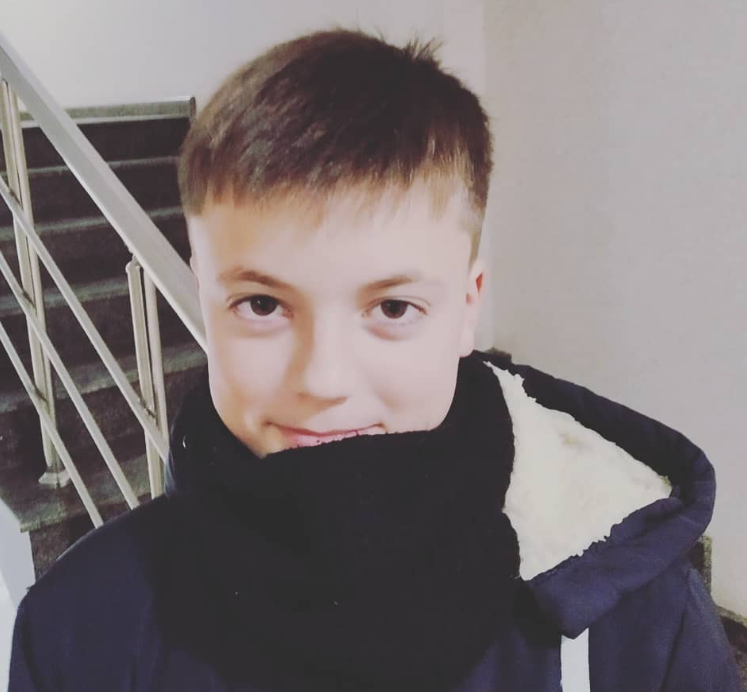
Petru este un coleg care apreciaza lucrurile bine explicate. Ii place sa avanseze pas cu pas si sa inteleaga fiecare etapa. In proiectele comune, contribuie cu rabdare si atentie.
Remos priveste proiectele noi cu interes si curiozitate. Ii place sa caute o varianta diferita atunci cand ceva pare dificil. In grup, aduce idei si o atitudine prietenoasa.
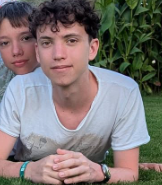
Bogdan se implica cu placere in activitatile practice. Ii place sa construiasca, sa testeze si sa imbunatateasca rezultatul. Apreciaza o echipa in care colegii se ajuta si invata impreuna.
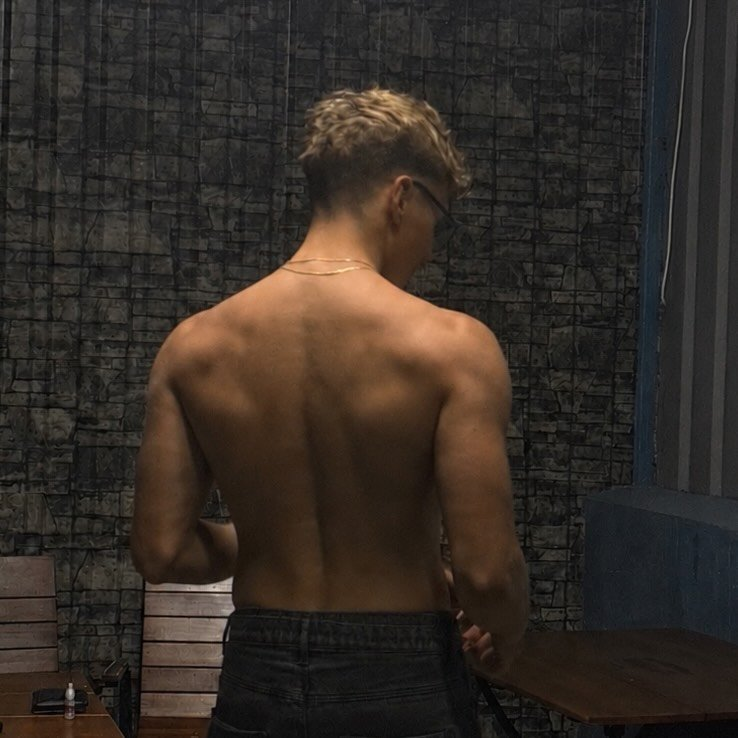
Gabriel este deschis la idei noi si la discutii interesante. Ii place sa priveasca o sarcina din mai multe unghiuri. In activitatile grupei, vine cu propuneri si cu chef de lucru.
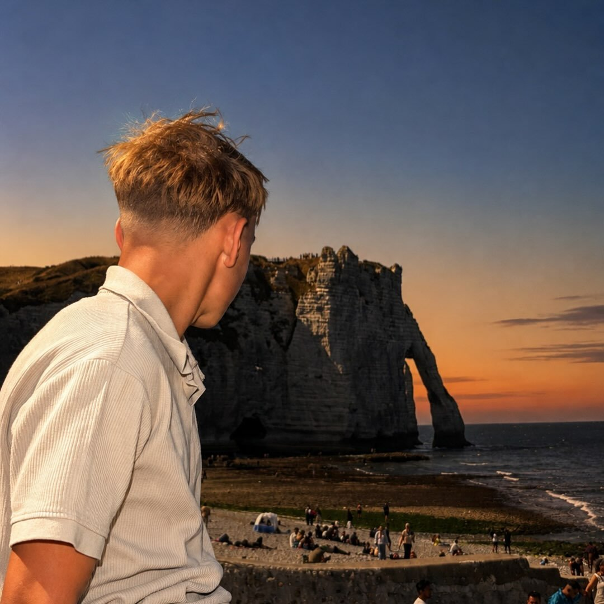
Artemie este curios in privinta tehnologiei si a felului in care functioneaza lucrurile. Ii place sa gaseasca explicatii prin incercari practice. Imparte cu colegii ideile care i se par interesante.
Sergiu prefera sa duca o sarcina la bun sfarsit inainte de a incepe alta. Ii place sa vada progresul facut prin pasi mici. In echipa, contribuie cu o atitudine calma si cu idei practice.
Daniel cauta mereu ceva nou de invatat dintr-un proiect. Ii place sa incerce solutii si sa descopere unde mai poate lucra. Se implica in discutii si apreciaza schimbul de idei dintre colegi.
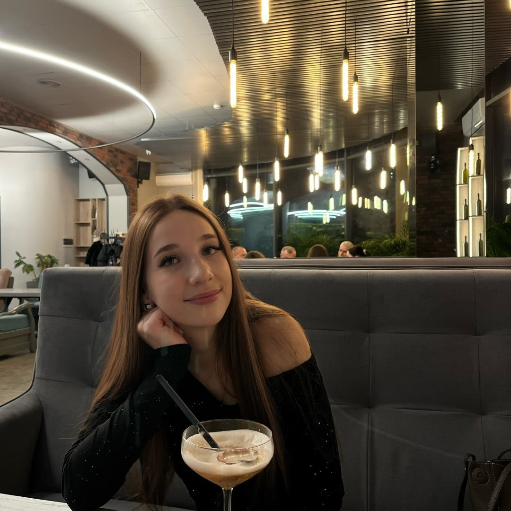
Madalina aduce grija si imaginatie in lucrurile pe care le face. Ii place sa transforme o idee simpla intr-o prezentare placuta. Colaboreaza cu deschidere si asculta sugestiile celor din jur.
Damian abordeaza provocarile cu energie si curiozitate. Ii place sa gaseasca legatura dintre o idee si o aplicatie practica. In activitatile comune, participa cu entuziasm si spirit de echipa.
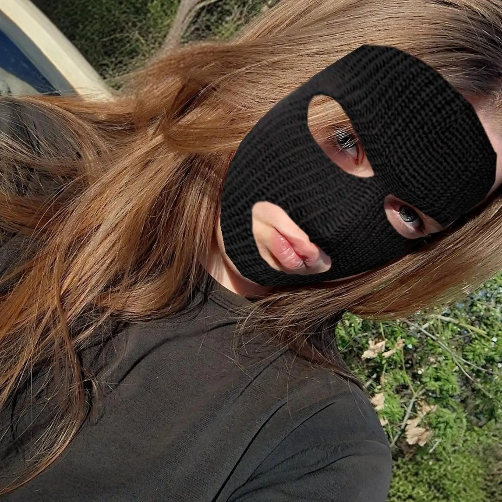
Gabriela apreciaza proiectele in care poate combina organizarea cu creativitatea. Ii place sa pregateasca lucrurile cu atentie. Aduce in echipa propuneri clare si incurajari pentru ceilalti.
Denis este interesat de idei practice si de provocari noi. Ii place sa experimenteze pana cand intelege cum functioneaza ceva. In grup, contribuie cu intrebari, solutii si o vorba buna.
Dumitru prefera sa invete facand si incercand lucruri noi. Ii place sa urmareasca o idee de la inceput pana la rezultatul final. Se bucura de proiectele in care fiecare coleg isi aduce contributia.